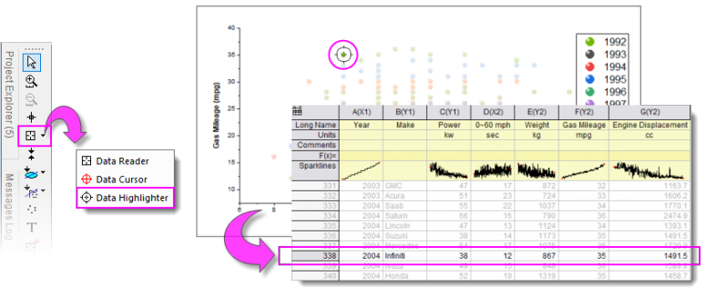
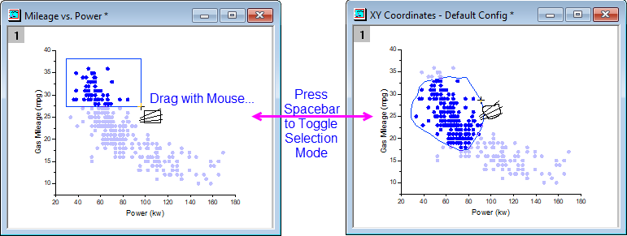
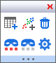
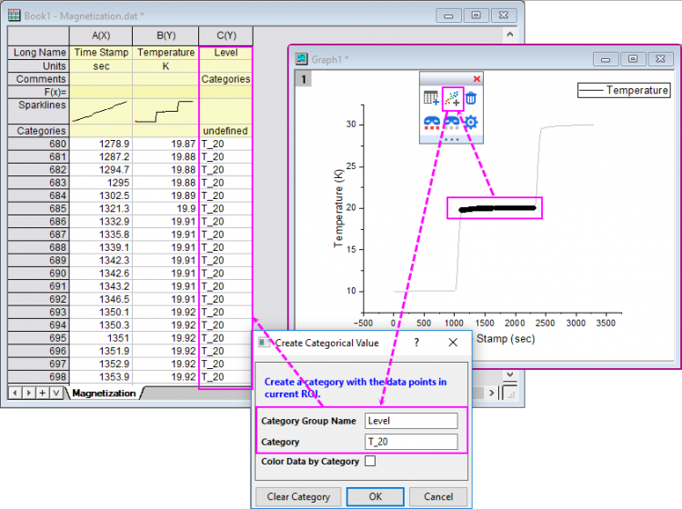
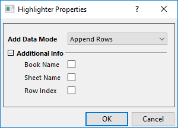

Datenmarkierer: Punkte im Diagramm und Quellarbeitsblatt auswählen
Data-Highlighter
Verwenden Sie das Hilfsmittel Datenmarkierer  (Symbolleiste Hilfsmittel), um gezeichnete Datenpunkte in Ihrem 2D- oder 3D-Punkt-/Balkendiagramm (aus Arbeitsblattdaten) auszuwählen und gleichzeitig die entsprechenden Datenzeilen im Quellblatt hervorzuheben. Sie können auch die Datenzeilen im Arbeitsblatt auswählen und die entsprechenden Punkte in den Zeichnungen dieser Daten hervorheben.
(Symbolleiste Hilfsmittel), um gezeichnete Datenpunkte in Ihrem 2D- oder 3D-Punkt-/Balkendiagramm (aus Arbeitsblattdaten) auszuwählen und gleichzeitig die entsprechenden Datenzeilen im Quellblatt hervorzuheben. Sie können auch die Datenzeilen im Arbeitsblatt auswählen und die entsprechenden Punkte in den Zeichnungen dieser Daten hervorheben.
- 
 |
Im Fall von 2D-Linien-/-Symbol-/-Säulendiagrammen mit mehreren Zeichnungen im Layer werden durch Klicken auf eine der Zeichnungen im Diagrammfenster oder in der Objektverwaltung die anderen Zeichnungen im Layer abgeblendet und die Quelldaten im Arbeitsblatt markiert. Wenn Sie nicht möchten, dass die Arbeitsblattdaten hervorgehoben werden, wenn Sie eine Zeichnung auswählen, setzen Sie die LabTalk-Systemvariable @PS = 0. Siehe FAQ-708 Wie ändere ich permanent den Wert einer Systemvariablen?
|
Punkte mit der Datenmarkierung hervorheben
Punkte im Diagramm markieren
- Aktivieren Sie das Diagrammfenster und wählen Sie dann das Hilfsmittel Datenmarkierer auf der Symbolleiste Hilfsmittel.
- Klicken Sie auf einen Punkt in Ihrem Diagrammfenster. Unausgewählte Datenpunkte im Diagrammfenster werden abgeblendet. Die entsprechende Zeile der Arbeitsblattdaten wird markiert, während die entsprechenden Zeilen der unausgewählten Datenpunkte abgeblendet sind.
-
- Während Sie sich im Auswahlmodus im Diagramm befinden, können Sie die Pfeiltasten nach links und rechts verwenden, um die Auswahl nach Zeilenindex zum vorherigen oder nächsten Punkt zu verschieben.
- Um mehrere Zufallspunkte im Diagramm auszuwählen, drücken Sie die Strg-Taste, während Sie mit der Maus klicken.
- Um Punktgruppen im Diagramm auszuwählen, ziehen Sie mit der Maus einen Bereich auf. Verwenden Sie bei aktivem Datenmarkierer die Leertaste, um zwischen den Auswahlmodi Rechteck und Freiform zu wechseln.
- 
Punkte im Arbeitsblatt markieren
- Aktivieren Sie das Arbeitsmappenfenster und wählen Sie dann das Hilfsmittel Datenmarkierer auf der Symbolleiste Hilfsmittel.
- Klicken Sie auf eine Zeile im Arbeitsblatt, um alle Datenzeichnungen der Zeilendaten zu markieren (können mehrere Diagrammfenster sein). Unausgewählte Datenpunkte im Diagrammfenster und Arbeitsblatt werden abgeblendet.
- Während Sie sich im Auswahlmodus im Arbeitsblatt befinden, drücken Sie die Pfeiltasten nach links und rechts, um die Auswahl zur vorherigen oder nächsten Zeile zu verschieben; gleichzeitig verschieben Sie die Auswahl zum entsprechenden Datenpunkt im/in den Diagrammfenster(n).
- Um mehrere Zufallszeilen im Arbeitsblatt auszuwählen, drücken Sie die Strg-Taste, während Sie mit der Maus auf die gewünschten Zeilen klicken; um mehrere nebeneinander liegende Zeilen auszuwählen, drücken Sie die SHIFT-Taste, während Sie auf die erste und letzte gewünschte Zeile klicken oder ziehen Sie die Zeilen mit Ihrer Maus.
Weitere Operationen für die markierten Punkte
Wenn Sie einen Datenpunkt oder eine Arbeitsblattzeile markiert haben, wird die Minisymbolleiste Datenmarkierung rechts oben im Diagramm- oder Arbeitsmappenfenster angezeigt.

Mit Hilfe dieser Symbolleiste können Sie Datenpunkte einfach kopieren, löschen, sie maskieren oder ihre Maskierung aufheben.
Punkte kopieren
Klicken Sie auf die Schaltfläche Teildatensatzblatt erstellen  , um die markierten Zeilen/Punkte in ein separates neues Blatt zu kopieren.
, um die markierten Zeilen/Punkte in ein separates neues Blatt zu kopieren.
Kategorien erstellen
Klicken Sie auf die Schaltfläche Kategorien erstellen  , um den Dialog Kategorialen Wert erstellen zu öffnen.
, um den Dialog Kategorialen Wert erstellen zu öffnen.

Dieser Dialog ähnelt dem des Minitools Cluster und kann dazu verwendet werden, eine Kategorie für die markierten Zeilen/Punkte zu erstellen. Sie dürfen Kategorien wiederholt erstellen, indem Sie den Dialog erneut öffnen oder direkt die Taste "C" drücken, ohne den Dialog zu öffnen.
Punkte löschen
Klicken Sie auf die Schaltfläche Punkte löschen , um die markierten Datenpunkte oder Arbeitsblattzeilen zu löschen.
Punkte maskieren/demaskieren
Klicke Sie auf die Schaltfläche Markierte Punkte maskieren/demaskieren  , um die markierten Punkte/Zeilen zu maskieren oder zu demaskieren. Sie können die Schaltfläche Abgeblendete Punkte maskieren/demaskieren
, um die markierten Punkte/Zeilen zu maskieren oder zu demaskieren. Sie können die Schaltfläche Abgeblendete Punkte maskieren/demaskieren  verwenden, um die anderen nicht markierten, abgeblendeten Punkte zu maskieren.
verwenden, um die anderen nicht markierten, abgeblendeten Punkte zu maskieren.
Kopierverhalten für Punkte benutzerdefiniert anpassen
Klicken Sie auf die Schaltfläche Dialog Eigenschaften öffnen  , um den Dialog Markierungseigenschaften zu öffnen.
, um den Dialog Markierungseigenschaften zu öffnen.

Datenmodus hinzufügen: Entscheiden Sie, wie die markierten Punkte kopiert werden sollen.
- Zeilen anhängen: Beim Kopieren der Punkte werden sie direkt an das existierende Ergebnisblatt angehängt.
- Zeilen mit Lücke anhängen: In jedem Datenmarkierungsprozess werden die Punkte mit einer Anfangslücke von einer Zeile beim Kopieren der Daten angehängt.
- Neues Blatt öffnen: Es wird ein neues Blatt erstellt, um die Punkte anzuhängen. Dies ist die Standardauswahl für jeden Datenmarkierungsprozess.
- Neue Spalten öffnen: Es werden neue Spalten zum existierenden Ergebnisblatts hinzugefügt, um die Punkte anzuhängen.
Zusätzliche Info: Entscheiden Sie, ob die Dateninfo während des Kopierens der markierten Punkte eingeschlossen werden soll.
Weitere Operationen in einer Version vor Origin 2022
Für die Version vor Origin 2022, die über keine Minisymbolleiste Datenmarkierung verfügt, können Sie den Anweisungen unten folgen, um weitere Operationen durchzuführen:
Die markierten Arbeitsblattdatenzeilen bleiben ausgewählt, auch nachdem Sie den Modus des Datenmarkierers verlassen (drücken Sie ESC oder klicken Sie auf das Hilfsmittel Zeiger  ). Dies ermöglicht Ihnen, weiterhin mit den Daten zu arbeiten. Die folgenden Aktionen werden unterstützt:
). Dies ermöglicht Ihnen, weiterhin mit den Daten zu arbeiten. Die folgenden Aktionen werden unterstützt:
- Zellen löschen: Klicken Sie mit der rechten Maustaste auf die Arbeitsblattauswahl und wählen Sie Löschen im Kontextmenü; oder drücken Sie die Taste Entfernen. Die Arbeitsblattzellen bleiben.
- Zeilen löschen: Klicken Sie mit der rechten Maustaste auf die Arbeitsblattauswahl und wählen Sie Zeilen löschen. Die Arbeitsblattzellen werden mit entfernt.
- Daten maskieren: Klicken Sie auf Spalte: Maskieren oder auf die Schaltfläche Maskieren
 auf der Symbolleiste Maskieren. Es werden weitere Operationen der Maskierung unterstützt.
auf der Symbolleiste Maskieren. Es werden weitere Operationen der Maskierung unterstützt.
- Daten kopieren: Um nur Daten in den Datenzeilen des Arbeitsblatts zu kopieren, drücken Sie Strg + C oder klicken Sie mit der rechten Maustaste auf die Auswahl und wählen Sie Kopieren. Um die Information der Spaltenbeschriftungszeile des Arbeitsblatts zusammen mit der Datenzeilenauswahl zu kopieren, öffnen Sie das Skriptfenster (Fenster: Skriptfenster) und geben Sie Folgendes ein:
wcopy -d
- Stellen Sie im aufgerufenen Dialog wcopy sicher, dass das Kontrollkästchen Daten kopieren aktiviert ist. Legen Sie dann das Ausgabearbeitsblatt fest tund klicken Sie auf OK.